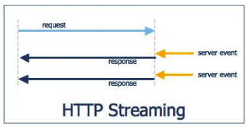

转自：知乎专栏https://zhuanlan.zhihu.com/p/23467317，作者：编译青春
1. 什么是 WebSocket
提到 WebSocket，我首先会想到 “及时通讯” 和 “推送” 这类词。在 WebSocket 以前，很多网站通过其他方式来推送信息，下面我们先看看以前的推送方式，这样，有比较才能看出 WebSocket 的优势。
1.1 （短）轮询（Polling）

这种方式下，client 每隔一段时间都会向 server 发送 http 请求，服务器收到请求后，将最新的数据发回给 client。一开始必须dd
如图所示，在 client 向 server 发送一个请求活动结束后，server 中的数据发生了改变，所以 client 向 server 发送的第二次请求中，server 会将最新的数据返回给 client。
但这种方式也存在弊端。比如在某个时间段 server 没有更新数据，但 client 仍然每隔一段时间发送请求来询问，所以这段时间内的询问都是无效的，这样浪费了网络带宽。将发送请求的间隔时间加大会缓解这种浪费，但如果 server 更新数据很快时，这样又不能满足数据的实时性。
1.2 Comet
鉴于（短）轮询的弊端，一种基于 HTTP 长连接的 “服务器推” 的技术被 hack 了出来，这种技术被命名为 Comet。其与（短）轮询主要区别就是，在轮询方式下，要想取得数据，必须首先发送请求，在实时性要求较高的情况下，只能增加向 server 请求的频率；而 Comet 则不同，client 与 server 端保持一个长连接，只有数据发生改变时，server 才主动将数据推送给 client。Comet 又可以被细分为两种实现方式，一种是长轮询机制，一种是流技术。
1.2.1 长轮询（Long-polling）

client 向 server 发出请求，server 接收到请求后，server 并不一定立即发送回应给 client，而是看数据是否更新，如果数据已经更新了的话，那就立即将数据返回给 client；但如果数据没有更新，那就把这个请求保持住，等待有新的数据到来时，才将数据返回给 client。
当然了，如果 server 的数据长时间没有更新，一段时间后，请求便会超时，client 收到超时信息后，再立即发送一个新的请求给 server。
如图所示，在长轮询机制下，client 向 server 发送了请求后，server会等数据更新完才会将数据返回，而不是像（短）轮询一样不管数据有没有更新然后立即返回。
这种方式也有弊端。当 server 向 client 发送数据后，必须等待下一次请求才能将新的数据发送出去，这样 client 接收到新数据的间隔最短时间便是 2 * RTT（往返时间），这样便无法应对 server 端数据更新频率较快的情况。
1.2.2 流技术（Http Streaming）

流技术基于 Iframe。Iframe 是 HTML 标记，这个标记的 src 属性会保持对指定 server 的长连接请求，server 就可以不断地向 client 返回数据。
可以看出，流技术与长轮询的区别是长轮询本质上还是一种轮询方式，只不过连接的时间有所增加，想要向 server 获取新的数据，client 只能一遍遍的发送请求；而流技术是一直保持连接，不需要 client 请求，当数据发生改变时，server 自动的将数据发送给 client。
如图所示，client 与 server 建立连接之后，便不会断开。当数据发生变化，server 便将数据发送给 client。
但这种方式有一个明显的不足之处，网页会一直显示未加载完成的状态，虽然我没有强迫症，但这点还是难以忍受。
1.3 WebSocket
写到现在，大家会发现，前人推出那么多的解决方案，想要解决的唯一的问题便是怎么让 server 将最新的数据以最快的速度发送给 client。但 HTTP 是个懒惰的协议，server 只有收到请求才会做出回应，否则什么事都不干。因此，为了彻底解决这个 server 主动向 client 发送数据的问题，W3C 在 HTML5 中提供了一种 client 与 server 间进行全双工通讯的网络技术 WebSocket。WebSocket 是一个全新的、独立的协议，基于 TCP 协议，与 HTTP 协议兼容却不会融入 HTTP 协议，仅仅作为 HTML5 的一部分。
那 WebSocket 与 HTTP 什么关系呢？简单来说，WebSocket 是一种协议，是一种与 HTTP 同等的网络协议，两者都是应用层协议，都基于 TCP 协议。但是 WebSocket 是一种双向通信协议，在建立连接之后，WebSocket 的 server 与 client 都能主动向对方发送或接收数据。同时，WebSocket 在建立连接时需要借助 HTTP 协议，连接建立好了之后 client 与 server 之间的双向通信就与 HTTP 无关了。
2. WebSocket 原理

相比于传统 HTTP 的每次“请求-应答”都要 client 与 server 建立连接的模式，WebSocket 是一种长连接的模式。具体什么意思呢？就是一旦 WebSocket 连接建立后，除非 client 或者 server 中有一端主动断开连接，否则每次数据传输之前都不需要 HTTP 那样请求数据。从上面的图可以看出，client 第一次需要与 server 建立连接，当 server 确认连接之后，两者便一直处于连接状态。直到一方断开连接，WebSocket 连接才断开。
下面我们从报文层面谈一下 WebSocket 与 HTTP 的差异。

首先，client 发起 WebSocket 连接，报文类似于 HTTP，但主要有几点不一样的地方：
“Upgrade: websocket”： 表明这是一个 WebSocket 类型请求，意在告诉 server 需要将通信协议切换到 WebSocket
“Sec-WebSocket-Key: *”: 是 client 发送的一个 base64 编码的密文，要求 server 必须返回一个对应加密的 “Sec-WebSocket-Accept” 应答，否则 client 会抛出 “Error during WebSocket handshake” 错误，并关闭连接
server 收到报文后，如果支持 WebSocket 协议，那么就会将自己的通信协议切换到 WebSocket，返回以下信息：
“HTTP/1.1 101 WebSocket Protocol Handshake”：返回的状态码为 101，表示同意 client 的协议转换请求
“Upgrade: websocket”
“Connection: Upgrade”
“Sec-WebSocket-Accept: *”
…
以上都是利用 HTTP 协议完成的。这样，经过“请求-相应”的过程， server 与 client 的 WebSocket 连接握手成功，后续便可以进行 TCP 通讯了，也就没有 HTTP 什么事了。可以查阅WebSocket 协议栈了解 WebSocket 的 client 与 server 更详细的交互数据格式。
3. WebSocket 与 Socket
网络应用中，两个应用程序同时需要向对方发送消息的能力（即全双工通信），所利用到的技术就是 socket，其能够提供端对端的通信。对于程序员而言，其需要在 A 端创建一个 socket 实例，并为这个实例提供其所要连接的 B 端的 IP 地址和端口号，而在 B 端创建另一个 socket 实例，并且绑定本地端口号来进行监听。当 A 和 B 建立连接后，双方就建立了一个端对端的 TCP 连接，从而可以进行双向通信。
WebSocekt 是 HTML5 规范中的一部分，其借鉴了 socket 的思想，为 client 和 server 之间提供了类似的双向通信机制。同时，WebSocket 又是一种新的应用层协议，包含一套标准的 API；而 socket 并不是一个协议，而是一组接口，其主要方便大家直接使用更底层的协议（比如 TCP 或 UDP）

4. 什么是 Socket.IO
Socket.IO 是一个封装了 Websocket、基于 Node 的 JavaScript 框架，包含 client 的 JavaScript 和 server 的 Node。其屏蔽了所有底层细节，让顶层调用非常简单。
另外，Socket.IO 还有一个非常重要的好处。其不仅支持 WebSocket，还支持许多种轮询机制以及其他实时通信方式，并封装了通用的接口。这些方式包含 Adobe Flash Socket、Ajax 长轮询、Ajax multipart streaming 、持久 Iframe、JSONP 轮询等。换句话说，当 Socket.IO 检测到当前环境不支持 WebSocket 时，能够自动地选择最佳的方式来实现网络的实时通信。